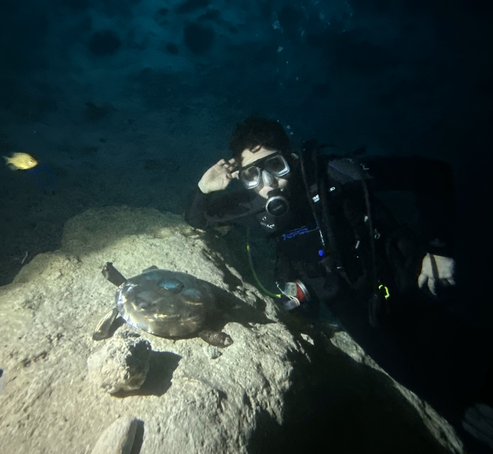

Hey, I'm Nicolas Caraballo, I'm currently a freshman studying Computer Science at the University of South Carolina! I love to combine the creative and logical sides of my personality to create things that can make people's lives a little bit more enjoyable. I have a special interest in game/software development, born from the Code Ninjas program, which I was both in and taught for. Outside of that, I enjoy theater, gaming, and scuba diving.
Resume: Download here
Many have times when they want or need to be creative but lack the personal skills or peers to do so.
A posterboard-style depiction of various issues/topics that will need adressing as the project goes on. There are various secions adressing potential solutions to the problem, problems, how I would have to support the project, how could the project actually be made, whether or not there are competition, and connecting points.
These sketches show the basic navigation of the site for someone seeking help with a work of their, someone contributing to another's work, and a moderator taking down a problematic post.
This prototype shows the basic pages avaliable for a user attempting to contribute to another person's post. Alongside it are slips representing the options on the drop down menu that a user could select, and the keyboard which would pop up upon tapping on any of the text boxes in order to input responses.